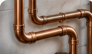
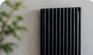
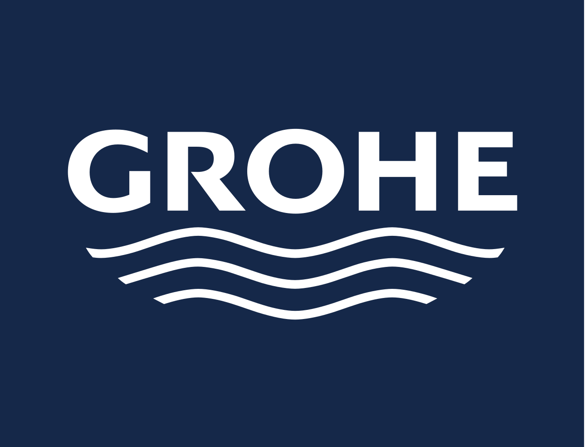

Votre confort,
notre métier
J’installe, entretiens et rénove vos équipements de plomberie, de chauffage et de salle de bains autour de Lens, Liévin, Arras et Béthune.
Des solutions complètes
pour votre habitat
Chauffage, plomberie, traitement de l’eau et salle de bains, de l’installation à la rénovation.

Plomberie sanitaire
Installation, dépannage et rénovation de vos équipements sanitaires.

Installation chauffage
Pose, entretien et remplacement de vos équipements de chauffage.
Traitement de l’eau
Des équipements pour limiter le calcaire dans votre installation.

Création de salle de bains
Conception, création et rénovation de votre salle de bains.

 Professionnel du Gaz
Professionnel du GazUn artisan local,
à votre écoute
Je suis Julien Willebrouck, artisan plombier-chauffagiste à Carency. J’interviens sur vos installations de plomberie, de chauffage et de salle de bains, de la pose des équipements à leur entretien.
Les salles de bains en images
Des marques de référence

Un projet ?
Parlons-en !
Décrivez vos travaux pour demander un devis, ou appelez-moi directement.
38, rue Roger Salengro · 62144 Carency